第一定律：允许哪些变化
以内能 U 为核心，判断变化是否满足能量守恒：孤立体系的内能保持不变。它识别的是“可允许的变化集合”。
LECTURE 07 · 2026/09/29
The Second Law: heat engines, entropy, and the Third Law
热力学第一定律是能量守恒的表述：它说明功与热是等价的能量传递方式，并允许热机在循环中把热转变为功。但它只给出“能量不能凭空产生或消失”，并不能说明为什么气体总是自发膨胀、热总是自发从高温流向低温、反应总是朝一个方向进行。第一定律回答“哪些变化是允许的”，第二定律才回答“在这些允许的变化中，哪一个会自发发生，以及平衡状态在哪里”。用课件的说法：第一定律是“不能凭空得到什么”，第二定律是“不能白拿”——收益总要付出折扣。
以内能 U 为核心，判断变化是否满足能量守恒：孤立体系的内能保持不变。它识别的是“可允许的变化集合”。
以熵 S 为核心，在可允许的变化中挑出真正自发的那些：孤立体系的熵在自发变化中增加。
自发变化的方向与体系的总能量无关，而取决于能量分布的方式。绝热容器中理想气体向真空膨胀时 ΔU = 0，能量总量没变，但能量分布变得更无序，变化仍然自发——这正是第二定律要刻画的内容。
热机是第二定律的历史起点。18—19 世纪蒸汽机（James Watt，1796）把燃料的热经工作物质（蒸汽）膨胀转化为机械功：工作物质冷却后被排出，活塞回到原位，然后再次膨胀，如此循环。热机从高温热源吸热，把其中一部分转化为功，其余排入低温热源。
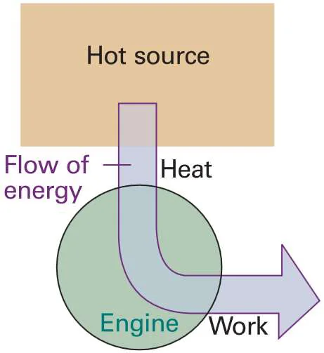
热库（reservoir，热源或热壑）是一个温度均匀的巨大体系，无论从中取出或向它加入多少热，它的温度都不改变；真实体系只能近似它。热机每完成一个循环，工作物质回到初态，故 ΔU = 0，于是
约定热机吸热为正，则 qh > 0、qc < 0。热机效率定义为输出的功与从高温热源吸收的热之比：
由于 qc < 0，只要热机是循环工作的，就必有 ε < 1。历史上人们曾希望通过改进机械设计（减少摩擦等损失）使 ε 趋近 1，但这一目标被更根本的原因所否决——这就是第二定律。
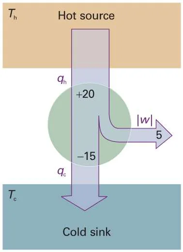
第二定律有多种彼此等价的表述，它们都指向同一个事实：热与功的相互转化是不对称的。
等价说法：不可能设计一台循环工作的机器，其唯一效果是从热库取热并对外做等量的功。热机必须同时向低温热源排热。
这正是制冷的代价：把热从低温搬到高温必须消耗功，制冷机不是第二类永动机。
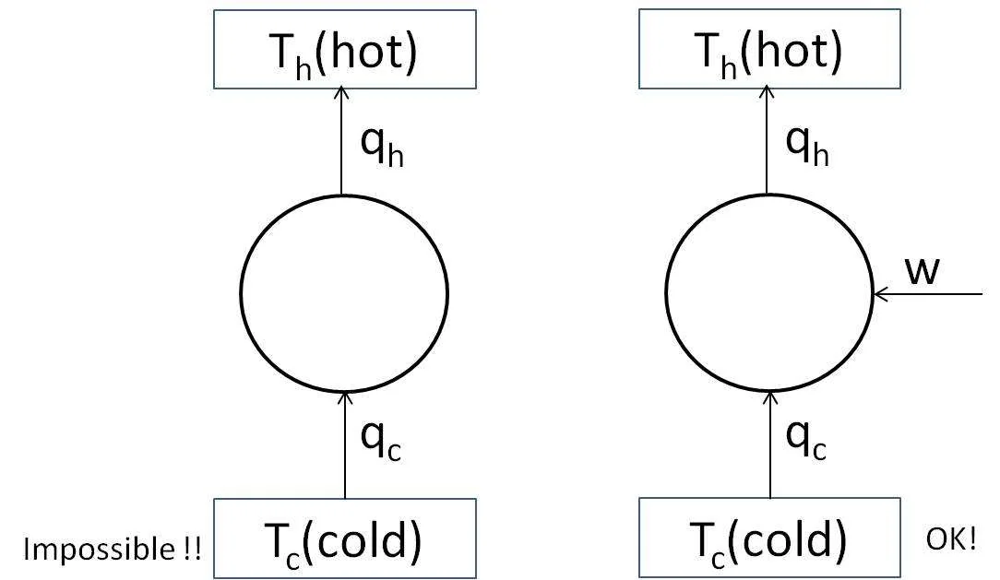
课件还把 Clausius 表述写作另一种形式：一切自发过程都是不可逆的，例如热自发地由高温流向低温且不可逆。此外 Boltzmann 的表述是：对绝热封闭体系，熵永不减少，因此高度有序的状态非常不可能；Planck 的表述是：第二类永动机不可能。这些说法彼此等价，只是选用了不同的观察角度。
课件提出一个反问：理想气体等温膨胀时热不是几乎全部变成功了吗？答案是：此时体积增大、状态改变了，这不是循环过程，因此不满足“唯一结果”这一前提。功可以 100% 转变成热；热转变成功即使达到 100% 也违反第二定律，除非同时有其他效应发生。
Carnot 循环是理想化的可逆循环，以理想气体为工作物质，由两条等温线和两条绝热线组成：A→B 在 Th 下等温可逆膨胀；B→C 绝热可逆膨胀降温到 Tc；C→D 在 Tc 下等温可逆压缩；D→A 绝热可逆压缩回到初态。
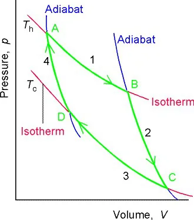
理想气体绝热可逆过程满足 TVγ−1 = 常数，对两条绝热线分别有 ThVBγ−1 = TcVCγ−1 与 ThVAγ−1 = TcVDγ−1。两式相除得到关键关系：
逐步计算四步的 w、q 与 ΔU 并求和，可发现一个漂亮的结果：总功正比于两个温度之差，而整圈的内能变化为零。
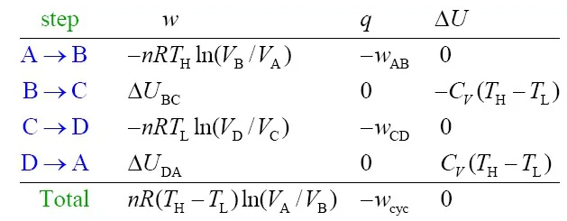
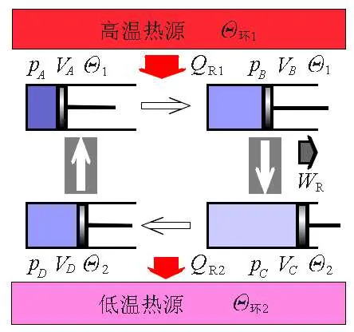
把总功与吸热相除，得到 Carnot 循环的效率只依赖两个温度：
温度必须用热力学温标。要提高效率只有两条路：加大两个热源的温度差，或降低低温热源的温度。当 Tc = 0 时 ε = 100%，但第三定律将指出这一极限无法达到。
课件用反证法给出一个重要推论。设两台可逆热机 A 与 B 工作在同一对热源之间，假设 εA > εB，把 B 反向运行作为制冷机，并把 A 输出的功驱动 B。由于 A 产出的功多于 B 反向运行所需的功，多出的部分可对外做功 w′。
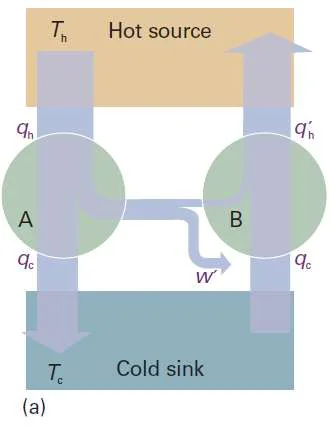
于是净结果是：低温热源热量的收支恰好抵消，高温热源净失能，而系统对外净输出了功——这相当于把热直接变成了功而不需要低温热源，违反第二定律。因此最初的假设不成立，只能是 εA ≤ εB。把 A 反向运行又得到 εB ≤ εA，两者合起来给出 εA = εB。
在两台热机工作于同一对温度之间时，没有任何热机比可逆热机更高效。因此 ε ≤ εr：可逆循环取等号，不可逆循环取小于号。也就是说，从给定的一份热量中获得的最大功，必须由可逆热机给出；而且所有可逆热机的效率都相同，与工作物质和循环构造无关，只由两个温度决定。
这个结论还有一个推论：任何循环的 εir < εr，也就是“实际热机永远达不到 Carnot 效率”。可逆热机是真实热机的理想化上界，而不是可实现的机器。
把 Carnot 循环的效率表达式改写，就得到一个不依赖工作物质的关系式（热温商）：
进一步地，任意可逆循环都可以用一连串小 Carnot 循环任意逼近：作一系列只由绝热线与等温线组成的窄循环，使每个小循环与原来循环的相应片段做功相同。相邻小循环之间有一段等温线与下一循环的等温线重合，正反两次的功相互抵消，只有最外缘的片段保留下来。因此对任意可逆循环都有
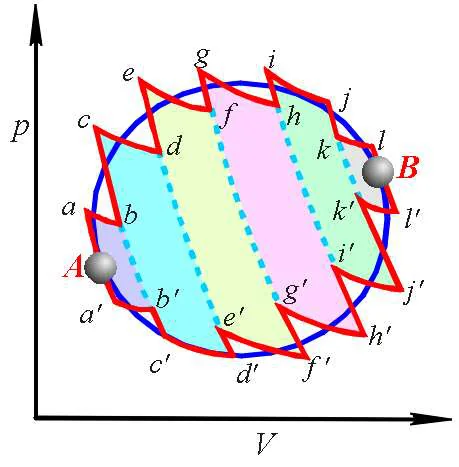
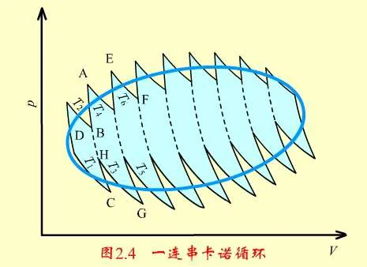
对任意两个状态 A、B，沿不同可逆路径积分必然给出同一个值：若沿 R1 与 R2 分别从 A 到 B，则 ∮ dqr/T = 0 展开后给出两条路径的积分相等。这说明 dqr/T 只依赖始末态、与路径无关，即它是某个状态函数的全微分。这个状态函数就是熵：
这就是熵的热力学定义。熵的单位是 J·K−1，摩尔熵的单位是 J·K−1·mol−1（与 R 相同）。另一方面，从微观角度看无序程度由微观状态数 W 描述，Boltzmann 公式给出
其中 k 是 Boltzmann 常数，W 是体系的微观状态数。自发变化总是朝着微观状态数更多、能量分布更无序的方向进行，这与“熵增加”是同一件事的两种说法。
对不可逆循环，同样的推理给出 ∮ dq/T < 0。考虑从状态 A 到状态 B 的一个不可逆变化，再沿一条可逆路径从 B 返回 A，构成一个不可逆循环：
把两种情形合并，就得到 Clausius 不等式：
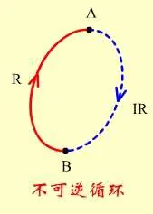
这个不等式是第二定律的紧凑数学形式，后面的自发判据与熵变计算都由它推出。
对孤立体系，q = 0，于是 dS ≥ 0。把体系与环境合起来记作“总”，即
这就是第二定律的熵表述：孤立体系的熵在自发变化过程中增加。热力学上不可逆的过程必然是自发的，并一定伴随 ΔSiso > 0。反过来说，只要某个变化使孤立体系的总熵减小，它就绝不会发生。孤立体系达到热力学平衡时，熵取最大值。
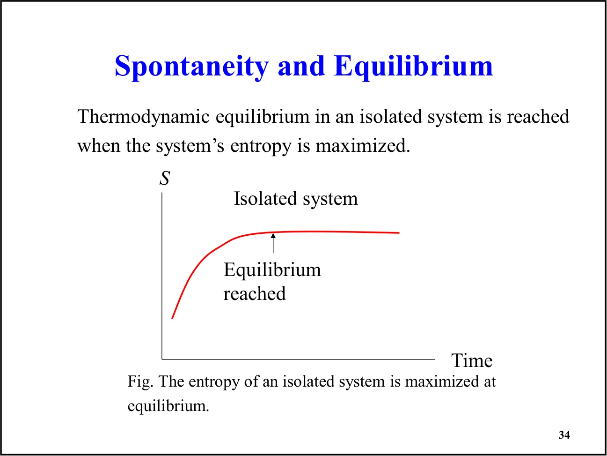
ΔSiso 是自发性的判据，注意它必须包含环境的熵。只看体系的熵变不足以判断方向：例如水结冰时 ΔSsys < 0，但在凝固点以下这个过程仍然自发，因为放出的热使 ΔSsur 足够大，总熵仍然增加。
因为熵是状态函数，ΔS 只依赖始末态，所以计算遵循固定三步：先确定初态与终态；再设计一条方便的可逆路径（实际过程可逆与否无关紧要）；最后沿该路径积分 dS = dqr/T。
环境的熵变另有捷径。环境通常被当作巨大的热源或热壑，其温度可视为恒定且不因体系内部的变化而改变状态，因此它与体系之间的热交换可以按可逆处理：
注意这里用体系的真实热效应（可逆或不可逆皆可）除以环境温度，不需要为环境另设路径。实际需要分类处理的过程有：理想气体的膨胀与压缩（等温、等压、等容、一般 pVT 变化与混合）、相变，以及固体和液体的变温。
理想气体等温膨胀时 ΔU = 0，故 qrev = −wrev = nRT ln(Vf/Vi)，于是
由于 S 是状态函数，这个表达式对可逆与不可逆变化同样成立。两种极端情形值得对比：若膨胀是可逆的，则环境的熵变恰好与体系相反，ΔStot = 0；若气体向真空自由膨胀（w = 0）且温度不变，则 q = 0、ΔSsur = 0，因此 ΔS > 0 且过程自发。
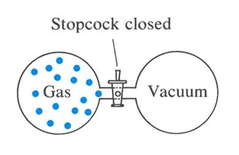
变温过程的熵变由热容的积分给出。等压与等容分别在 Cp,m、CV,m 于温区内为常数的条件下得到简洁形式：
若温度、压力、体积同时改变，可任选两步组合，用状态函数性质把两段相加：
25 °C、1.00 atm 下 500 cm3 的氩气膨胀到 1000 cm3，同时升温到 100 °C。求 ΔS。
先由理想气体方程求物质的量：n = pV/RT = 0.0204 mol。因熵是状态函数，可设计两步路径。
第二步为等容可逆升温。单原子理想气体 CV,m = Cp,m − R = 12.48 J·K−1·mol−1，温度由 298 K 升到 373 K：
结果为正值，符合体积增大且温度升高都使无序程度增加这一预期。
恒温恒压下两种理想气体混合，可视为各自向对方腾出的体积做可逆膨胀。设摩尔分数 XB = nB/n，则
因为 0 < XB < 1 时 ln XB < 0，所以混合熵恒为正值——理想气体混合总是自发的，这是熵驱动的典型例子。
物质熔化或汽化时分子有序程度改变，因此相变必然伴随熵变。在正常的相变温度 Ttrs 下，两相处于平衡，热交换可逆；恒压时 q = ΔtrsH，故摩尔相变熵为
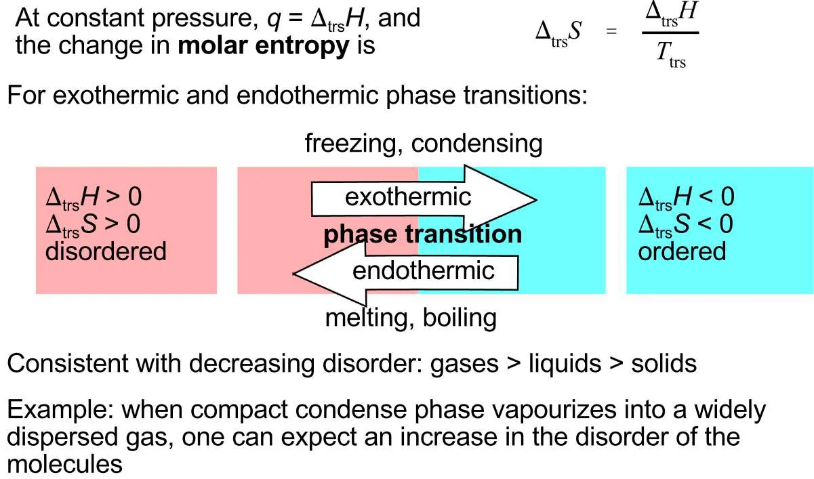
符号规律与有序程度一致：熔化、汽化吸热且 ΔS > 0（更无序）；凝固、冷凝放热且 ΔS < 0（更有序）。就物质形态而言，无序程度大致是气体 > 液体 > 固体。例如凝聚相汽化成高度分散的气体，可预期分子无序程度明显增加。
若过程发生在偏离 Ttrs 的温度（例如 -10 °C 的过冷水结冰），它不是可逆过程，上式不能直接套用。此时必须设计一条经由正常相变温度的可逆路径，把过程拆成“升温到 Ttrs → 在 Ttrs 相变 → 降温到目标温度”三段，即 ΔS = ΔS1 + ΔS2 + ΔS3。
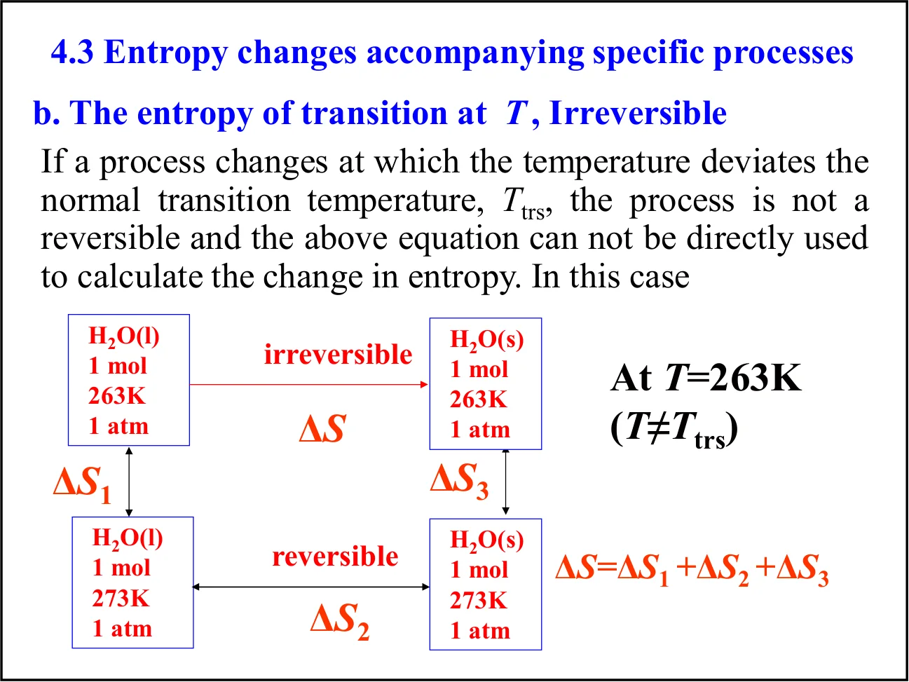
求 10.0 g 过冷水在 −10 °C、1.00 atm 下转变为同温同压冰的 ΔS。冰与过冷水的平均 Cp 分别为 2.09 与 4.23 J·g−1·K−1，冰的熔化焓为 333.6 J·g−1。
总熵变为负，说明体系变得更有序；该过程能自发是因为放出的凝固热使环境熵增加更多，ΔSiso 仍为正。
对汽化焓与汽化熵，课件给出 Trouton 规则这一经验规律：大多数液体的标准汽化熵近似相同，约为 85 J·K−1·mol−1，于是可由沸点估算汽化焓 ΔvapH° ≈ Tb × 85 J·K−1·mol−1。
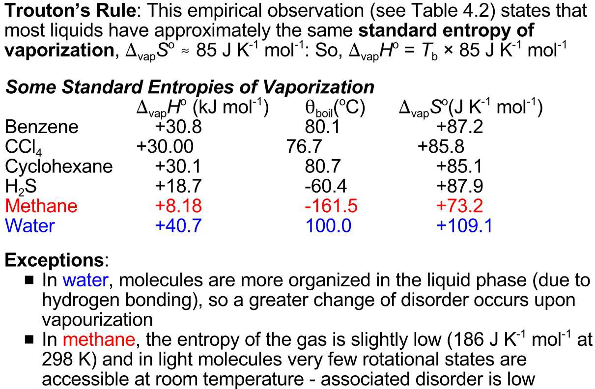
例外有明确的微观原因：水在液相中因氢键而排列较有序，汽化时无序程度的增加更大，故 ΔvapS° 偏高；甲烷等轻分子的气相转动状态在室温下可及数目很少，气相熵偏低，于是该值偏小。可见 Trouton 规则是经验近似，遇到强氢键或小分子时需要具体分析。
要在很宽的温度范围内确定熵，必须同时计入相变处的熵变和相变之间的变温熵变。由于熵可以逐段相加，对具有固、液、气三态的物质：
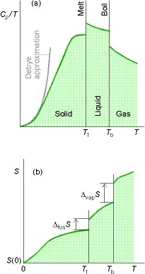
换言之，熵等于 Cp/T 曲线下直到相应温度的面积，再加上途中每一个相变的熵。式中各项多数可由量热实验测得，也可由计算得到。
极低温下 Cp 的测量很困难，课件给出 Debye 外推法：尽可能测到低温，在其下假定热容正比于 T3，即 Cp = aT3，从而
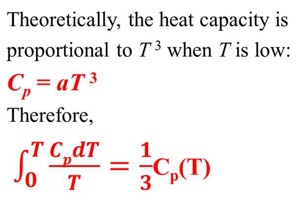
某固体在 10 K 时的摩尔 Cp 为 0.43 J·K−1·mol−1。按 Cp = aT3 求系数，再由上一式估算该温度下的熵。
剩下的问题正是 S(0) 等于多少——这由第三定律回答。
从分子层面观察：在 T = 0 K 时热运动能量已被完全冻结；在完美晶体中所有原子（离子）都处于规则均匀的排列，只有一种排布方式，即 W = 1。由 S = k ln W 可知此时熵为零。若晶体中存在取向无序（例如 CO 分子可正反两种朝向、OC 与 CO 混排），则 W > 1、剩余熵不为零，所以第三定律的成立前提是“完美晶体”。
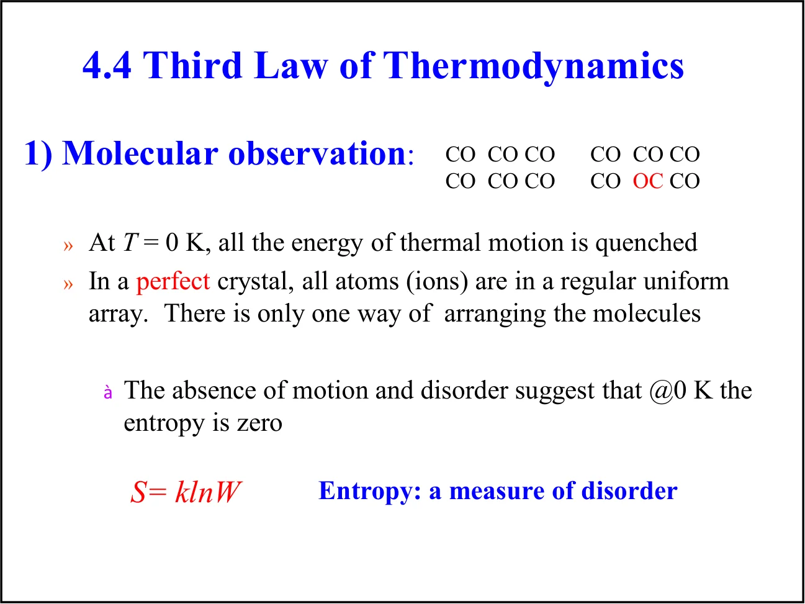
Nernst 热定理（1906）指出：任何物理或化学变化所伴随的熵变，在温度趋于零时趋于零，即 ΔS → 0（T → 0），前提是所涉及的物质都是完美晶体。若所有完美晶体元素在 T = 0 时 S = 0，则化合物的生成（一种化学变化）也要求所有完美晶体化合物在该温度下熵为零——这个推论就是第三定律。
Planck（1911）的表述：所有完美晶体物质在 T = 0 K 时的熵为零，即 S(0) = 0。它只意味着所有完美物质在该温度下具有相同的熵，把这个共同值取作零是一种方便的选择，并且与分子层面的观察一致。等价说法：无论采用何种过程，也无论怎样理想化，都不可能经过有限步骤把任何体系的温度降到绝对零度。
课件用绝热去磁说明为什么达不到绝对零度：顺磁物质中未成对电子的取向随外磁场排列，因此①在等温环境下加磁场，电子取向有序化，S 下降；②在绝热环境下撤去磁场，取向被保留而 S 不变，温度随之下降。重复这两步可以逐次降温，但温度越低，每一步能降低的幅度越小；在步骤数趋于无穷的极限下 T → 0 K，而这个极限永远无法真正到达。
以 S(0 K) = 0 为基准，物质在温度 T 的标准状态下所具有的熵称为第三定律熵或标准熵 S°(T)，其完整表达式正是上一节热容积分的分形式：
这是一个重要的区别：焓和内能没有绝对值，只有变化量；而熵可以借助第三定律定出绝对值，所有计算中都直接使用它。课件给出的 298 K 标准摩尔熵数据（J·K−1·mol−1）：石墨 5.7、金刚石 2.4、碘 I2(s) 116.1；液态苯 173.3、水 69.9、汞 76.0。可以看到同一种元素的不同晶型熵不同（石墨 > 金刚石），液体的熵大于同温下的固体，分子越复杂、越柔软，熵越大。
标准反应熵定义为产物与反应物各自处于标准状态时摩尔熵之差，按化学计量数加权：
反应 H2(g) + 12O2(g) → H2O(l)，各标准摩尔熵为 Sm°(H2O, l) = 69.9、Sm°(H2, g) = 130.7、Sm°(O2, g) = 205.0 J·K−1·mol−1。
结果为负，原因很直观：反应由气相变为液相，分子无序程度下降。
反应熵同样随温度变化。在反应物和产物均不发生相变的温区内，把生成物与反应物的热容差按化学计量数加权，得到与 Kirchhoff 定律形式相同的关系：
课件以 CO(g) + 2H2(g) → CH3OH(g) 为例，给出三种气体的 Cp,m 为 29.04、29.29 与 51.25 J·K−1·mol−1，要求把 298 K 的反应熵换算到 423 K。先求反应热容差：
ΔrCp° 为负且视为常数，则升温使反应熵变得更负：ΔrS°(T) = ΔrS°(298 K) + ΔrCp° ln(T/298 K)。若取 298 K 的标准摩尔熵 CO(g) 197.7、H2(g) 130.7、CH3OH(g) 239.8 J·K−1·mol−1，则 ΔrS°(298 K) = 239.8 − 197.7 − 2 × 130.7 = −219.3 J·K−1·mol−1，代入 423 K 得 −219.3 − 36.37 × ln 1.419 ≈ −232.0 J·K−1·mol−1。该反应把 3 mol 气体变成 1 mol 气体，熵大幅减小，与计算结果一致。
课件的章节提纲列出了 4.6 Helmholtz 能与 Gibbs 能、4.7 标准摩尔 Gibbs 能，并在第 22、34 页重复出现，但本讲稿实际只推进到第三定律与标准摩尔熵，未对这最后两节展开。它们应属后续课程内容。
课件用一张图把全部熵变计算串了起来：总判据是 ΔSiso ≥ 0，它由 ΔSsys 与 ΔSsur 两部分组成；体系的熵变按 pVT 变化、相变、化学反应三条分支处理，环境部分则统一用 −qsys/Tsur 求得。
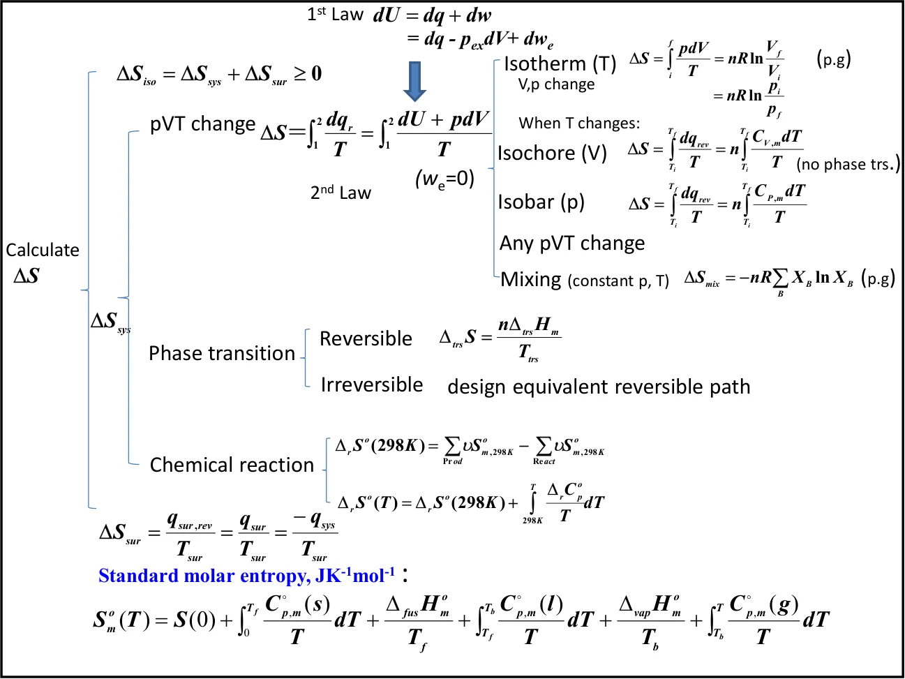
2.00 mol 双原子理想气体在 250 K 下被可逆绝热压缩到 300 K。已知 CV,m = 27.5 J·K−1·mol−1，求 q、w、ΔU、ΔH 与 ΔS。
过程可逆且绝热，故 q = 0。由于 ΔS = ∫dqrev/T 而 dqrev = 0，所以
对理想气体 Cp,m = CV,m + R = 27.5 + 8.314 = 35.814 J·K−1·mol−1，于是
注意这里的 ΔS = 0 是“可逆绝热”的直接结果，而不是“温度不变”所致——温度确实升高了，但熵变仍为零，这正是可逆绝热过程的特征。
2.75 kg 铜在恒压下由 330 K 冷却到 275 K。已知铜的摩尔质量 63.54 g·mol−1、Cp,m = 24.44 J·K−1·mol−1，求放出多少热以及样品的熵变。
负号表示样品变得更有序。环境吸收了 −q 的热量，其熵增加更多，因此总熵仍然增加。
① 第 4 页把 Clausius 表述与 Kelvin–Planck 表述写成一句合并句，用括号并列了两种备选措辞，容易读错归属，正确含义见本课第 3 节。② 课件多处把 Planck 拼作 “Plank”。③ 第 13 页与第 19、21 页为中文教材插图与重复的总结页，其中第 13 页插图带有教材水印，本课配图已改用同一逻辑的课件原图。④ 第 36 页 “280 pK” 指 280 皮开尔文（pK = 10−12 K），是 2001 年诺贝尔物理学奖相关的玻色–爱因斯坦凝聚实验温度量级。⑤ 第 39 页例题只给出三种气体的 Cp,m 与 298 K→423 K 的换算式，298 K 的反应熵需另查标准摩尔熵表；本课正文所用的 197.7、130.7、239.8 J·K−1·mol−1 取自 Atkins 数据表，请与课程指定教材核对。